Every number below was produced by the nodegraph engine running
real node graphs on ChannelGFP,R-B,Nile Blue,TD_Seq0001.nd2, and scored
against 582 hand-labelled granule blobs. Zero new ops were added.
Why this document exists. Until now every quantitative result
in this project came from hand-rolled skimage scripts that never touched the
engine — scripts/_bed_analyze.py imports only numpy and
skimage, and exactly one script in the whole repository had ever driven
Engine on a real ND2 (_ingest_nd2_smoke.py, a 92-line smoke test).
So there was a prototype, not a workflow, and a standing proposal to add eight new nodes.
This pass inverts the question: express the analysis in nodes that already exist, and let the training data decide whether anything needs adding. The labels overturned three of my own hypotheses along the way, and a fourth — that the partition was accurate, full stop — survived until someone asked the one question the labels cannot answer. All four corrections are in here, in §6, §7 and §9.
Fifteen shipped ops do the whole analysis. None were added, none were
modified. scripts/_catalog_snapshot.py check reports
CATALOG IDENTICAL for this entire pass.
| Analysis step | Shipped op | What it contributed |
|---|---|---|
| Load + pick a channel | io.load → channel.select | the F, I and GFP branches |
| Foreground | analysis.threshold | uint8 0/1 mask, per channel, Otsu or fixed |
| Foreground + size filter + components | analysis.segment | one node; min_area is in µm² |
| Smooth for seeding | enhance.gaussian | σ in µm |
| Neck-breaking (tested, rejected) | enhance.morphology | greyscale opening — made it worse |
| Intensity-maximum seeds | detect.spots | radius band in µm; the accuracy ceiling |
| Alternative seeder (tested, rejected) | detect.particles | one coupled knob; 54.1% |
| Split each blob by its own seeds | analysis.voronoi | bound=per_region — one arena per component |
| Per-object shape + intensity | analysis.measure | solidity, and cross-channel via raw |
| Regions → points | transform.label_to_points | cell centroids for tracking |
| Per-plane phase fraction | transform.transfer_domain | voxel→plane reducer=mean on a 0/1 mask |
| Paint a column; bridge a track | transform.transfer_structure | label→voxel, track→point |
| Linking | track.link | max-IoU on labels, nearest on points |
| Velocity | analysis.object_metrics | needs frame_interval |
Three proposals died on contact with the catalog.
analysis.classify_objects is unnecessary here — F and I are separate channels,
so the class is the channel. analysis.refine_labels is unnecessary —
analysis.voronoi bound=per_region already subdivides a component by its own
seeds. And the granule-linking defect I had blamed on the repository was mine:
track.link target=label has always linked by maximum IoU
(track/link.py:43-53); my batch script used centroid distance.
These are screenshots of ND2 Studios, rendered offscreen from the
same *.nd2graph.json files that produced every number in this document
(CodeLog/graphs/). Nothing here is a redraw: the engine loaded these files, and
so did the GUI.
One tell you can check yourself. Node cards render metadata-derived values by evaluating
each socket's derive expression against the propagated envelope; with no
metadata seed they fall back to the literal string "auto"
(node_item.py:707). Every card below shows real resolved numbers —
1079.73 um2, 6.9 µm, 23.693… µm — which is only
possible for a graph carrying this acquisition's real calibration. A decorative graph would
be full of auto and red missing-domain chips.
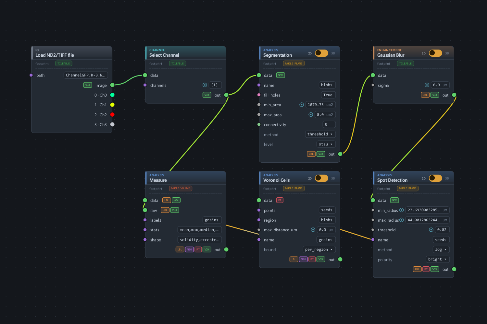
Load ND2 → Select Channel [1] → Segmentation
(Otsu + min_area) → Gaussian Blur → Spot Detection
→ Voronoi Cells → Measure. The second green edge from
Select Channel down to Measure's raw socket is the
cross-channel tap. Amber 2D levers, granularity chips
(WHOLE PLANE, WHOLE VOLUME) and domain
chips (VOX LBL
PT MSH) are all live state, not
decoration.Two orderings in that picture are load-bearing rather than stylistic, and both would be easy to get wrong:
Gaussian Blur sits after the threshold. Smoothing first would
move the Otsu cut, and the cut is the one thing verified bit-identical to the prototype.
Smoothing after it changes only what the seeder sees.Measure's raw taps the pre-smoothing branch. Intensities
are then read off the unsmoothed image. _shared/raw_measure.py explicitly permits
enhancement between the two branches and refuses a geometry op — a crop or a shift
would mean the two branches no longer address the same voxels.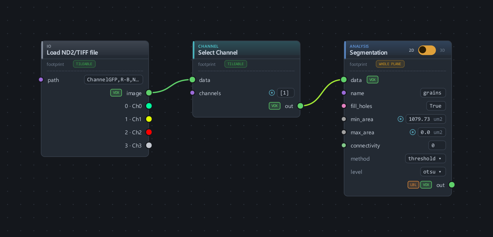
Each card below is the real thing, rendered at 3× supersample straight out of the scene graph. The prose is what the node contributed here and what it cost.
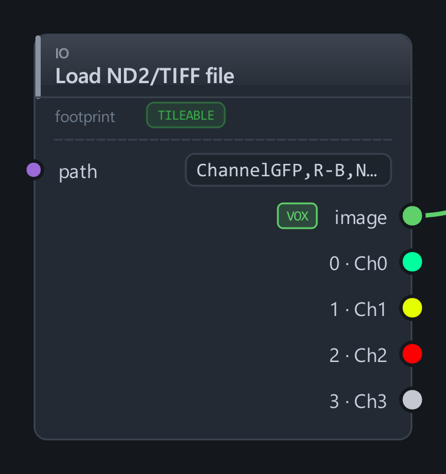
Emits a lazy DATASET plus per-channel taps Ch0…Ch3 in the
file's own display colours. Headless, the engine takes the source payload from
seeds[], so the run scopes itself to whichever planes it needs — the 18.5 GB
file never materialises and was never transcoded for this work.
It also told me something wrong. Its calibration reports
dt_s = 11351.1 s. The true interval is 2837.2 s — a factor of
4.0009. _dt_from_timestamps takes the median of consecutive
differences of frame_timestamps_s, and on this file the reader recovers only
4 of 15 stamps, at t = 0, 4, 8, 12. The median defends against one dropped frame;
against a uniformly strided subset every gap is wrong by the same integer factor, so the
median is exactly as wrong as the mean and nothing looks anomalous. Since
analysis.object_metrics divides by this, every velocity would have come out
4× too slow.
A meta_transform, so axes and calibration stay consistent downstream.
Doing the analysis per channel is what retires the whole object-classification problem:
the functional and inert populations are two channels, so "which class is this object"
is answered by which branch it came from.
It is also what makes analysis.measure's cross-channel read
legal — the provenance comparison drops the channel stamp precisely when both branches
are single-channel, which two taps off one source guarantee.
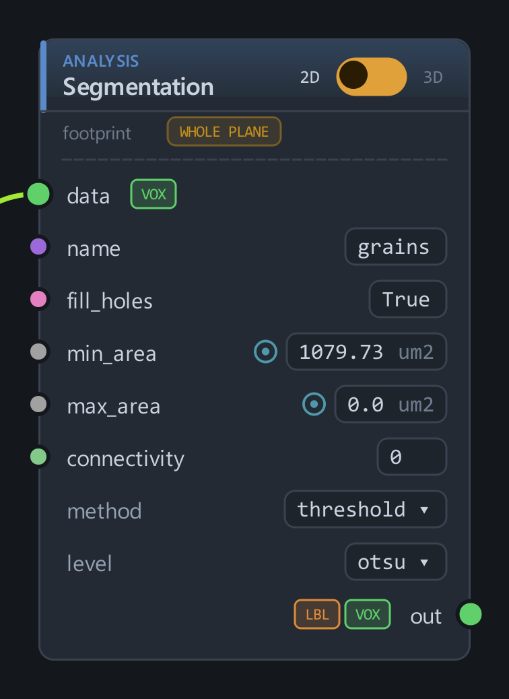
The workhorse. Threshold, size filter and connected components in one node, with
min_area/max_area in µm² and four methods including two
foundation models.
Verified bit-identical to the prototype. With
min_area=0, method=threshold level=otsu fill_holes=True produces
an array exactly equal to the hand-rolled
binary_fill_holes(img > threshold_otsu(img)) at all three label
conditions — not similar, equal. With the filter on, the foreground is a strict
subset, and the IoU deficit (0.9372 measured vs 0.9374 predicted from the area
ratio at M01) is entirely the filter.
It reduces 2337 / 1906 / 2125 raw components to 303 / 171 / 210 granule-sized ones. The rest is sub-granule haze — the debris population that had been quietly contaminating every per-object statistic in this project.
Its limits, measured. The watershed branch floods its own
internal EDT with peaks spaced by min_distance; it cannot be handed a
different landscape or different seeds. That constraint is what routes R1 and R2 exist to
compare — see §6, where it turns out not to be the bottleneck.
The card shows resolved state; the inspector shows the editable form — spin boxes with real ranges, the ƒ-auto toggles that switch a socket between a pinned value and its metadata-derived default, and the mode dropdowns.
Note what is absent: rows gated by available_in on an
inactive mode do not render at all. The min_volume/max_volume
pair only appears on the 3D lever, and mask/min_distance only
under method=watershed. The card is a picture of the node's current
configuration, not its full socket list.
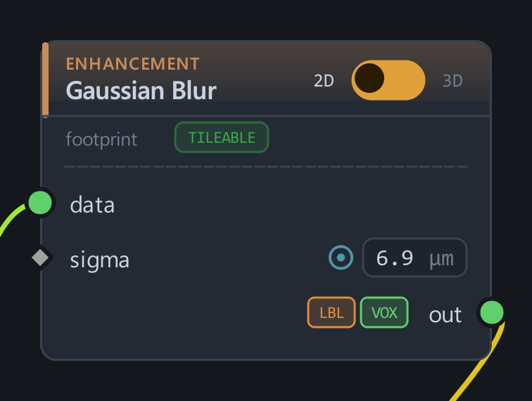
σ in µm, converted through pixel_size_um. Swept from 0 to 20 µm: the
optimum is 10.0 µm and it is worth 8.4 points of accuracy over no smoothing
at all (75.4% → 83.8%). Below it the seeder fires on texture; above it neighbouring
granules merge into one maximum.
One caveat the card cannot show: enhance.* nodes operate on the
image, never on a named layer. There is no way to blur a mask, which is why the
neck-breaking experiment had to go through greyscale morphology instead.
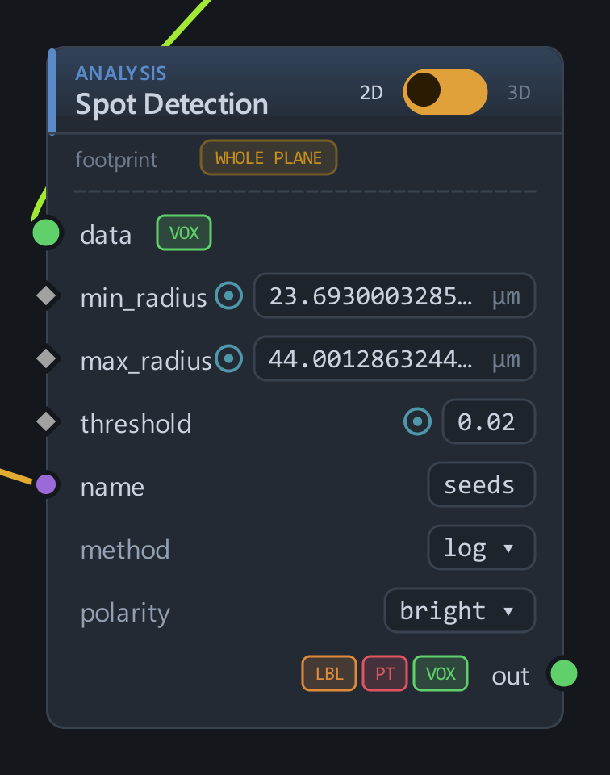
A two-ended radius band in µm, with σ = r ⁄ pixel_size ⁄ √ndim and a 1-voxel floor.
The band here is 0.7–1.3 × r_eq, and r_eq comes from the
labels — the median area of a user-confirmed single granule, per condition. That is
why the card reads 23.693… µm rather than a round number: the parameter is
measured, not chosen.
This node is the accuracy ceiling, and §6 shows why. Both of its
settings were exhausted: method=log beats method=dog at every
band tried (83.8% vs 82.0%), and its threshold is a flat plateau — 81.3% for
every value from 0 to 0.005, because the response is already saturated.
Its threshold acts on a per-plane min-max normalised
image, which is a real design decision rather than an accident: it makes one value
transferable across planes of differing brightness. Here it also made it insensitive.
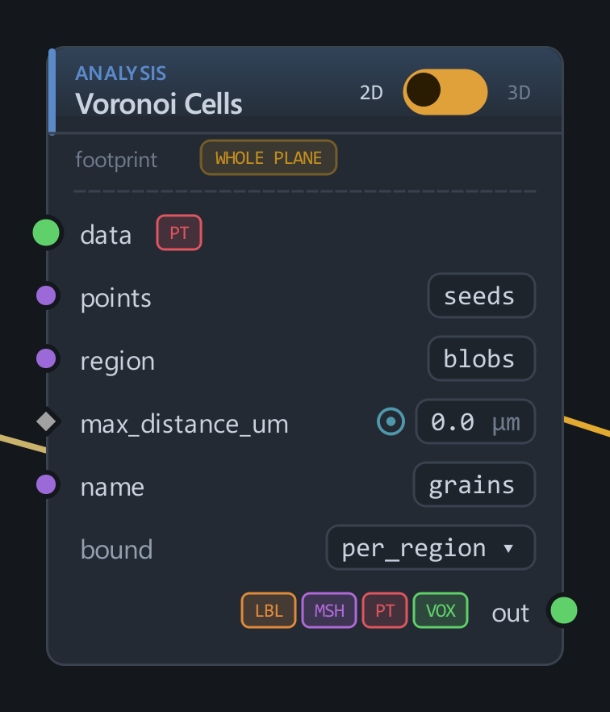
The splitter, and the node I had most underrated. bound=per_region treats
every connected component of the region raster as its own arena: a
voxel competes only among the seeds sharing its arena value, so a seed cannot claim
territory in a different blob. That makes it subdivide each blob by its own seeds — the
closest shipped analogue of flooding a landscape.
It is essentially exact. Given the right number of seeds, the nearest-seed partition returns the right number of pieces 99.6% of the time — 2 errors in 484 blobs. I predicted this node would be the weak link. It is the strongest.
I also predicted the arena choice was doing the work. It is not:
bound=mask (one arena for everything) scores 81.6% against
per_region's 81.3% at default parameters — a tie. Retracted.
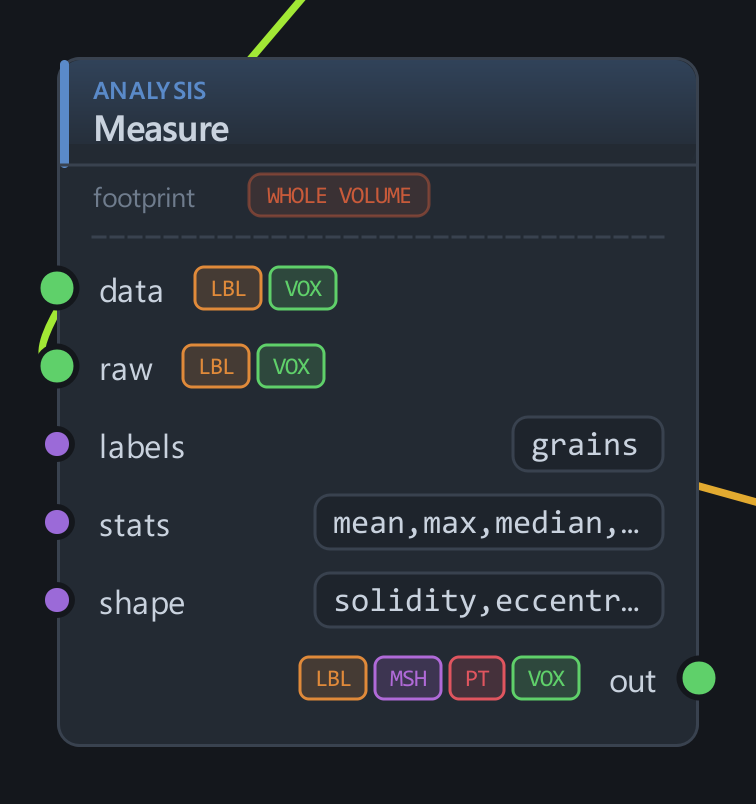
Per-object intensity statistics and shape, including solidity — which was the
single best merge discriminator this project ever measured, and which has been a shipped
column all along. Its second raw input reads a different channel at
the same voxels, and that is the whole cross-channel measurement used in §7.
A friction worth naming: it has no output-name socket, so its columns
land on the Label table named by labels. Two measure nodes on one
table collide on mean_intensity. Reading two channels therefore means two
pulls, not two nodes — which is how the cell numbers in §7 were taken.
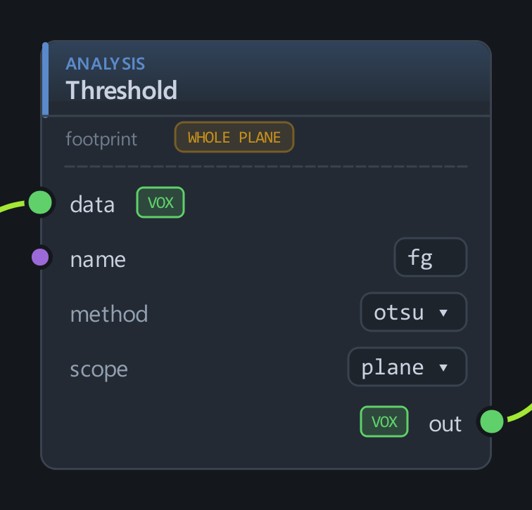
Writes a uint8 0/1 mask — the form transfer_domain needs to turn a phase
into a per-plane area fraction. Six methods; the one that mattered was fixed,
for the reason in §7: Otsu is a relative rule, and on a channel with no signal in it
a relative rule dutifully splits the noise floor and reports the brighter half as
material.
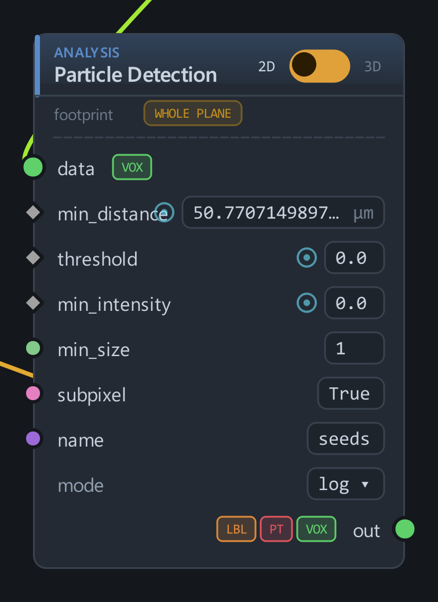
Its only scale knob is min_distance, which sets the LoG σ and the
NMS radius and the border trim at once. Coupled that way it cannot both resolve a
granule and permit two touching ones: scored 54.1%, with 22.2% of granules lost
outright (33.0% at M15). Included here because a rejected route with a number attached
is evidence, and the coupling is the reason.
What each node does to the image, on one real plane. Colours use a stable id→colour hash, so a granule keeps its colour from panel to panel and you can follow one object through the chain.
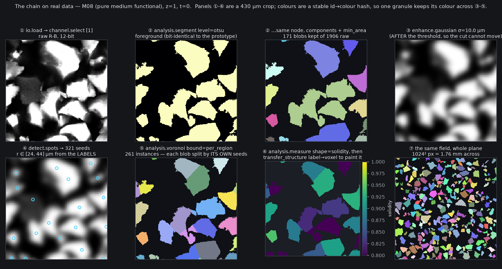
transform.transfer_structure label→voxel — a node producing its own figure.582 blobs across three conditions, hand-labelled "how many granules are in this blob" (1 · 427, 2 · 109, 3+ · 46). The metric is vendored unchanged from the prototype so the numbers are comparable: for each labelled blob, count the pieces of the candidate labelling inside it with area ≥ 0.30 × the median label-confirmed single for that condition, cap at 3, compare.
The reference partition stays frozen. The labels key on
oid, the id of a connected component of the original Otsu foreground.
Re-deriving those blobs from the graph would renumber them and silently unjoin every label,
so the harness rebuilds the reference labelling with skimage and scores the node
raster inside each reference blob. The node route supplies the candidate subdivision,
never the frame it is judged in.
Harness control passed before anything else was believed. Route R0 — plain connected components through the graph — scores 73.4% pooled against the prototype's independently-derived 73.3%, and its per-condition under-split rates (34.5% / 26.3% / 19.3% for S/M/L) reproduce the prototype's merge rates exactly. The scoring is measuring the graph, not itself.
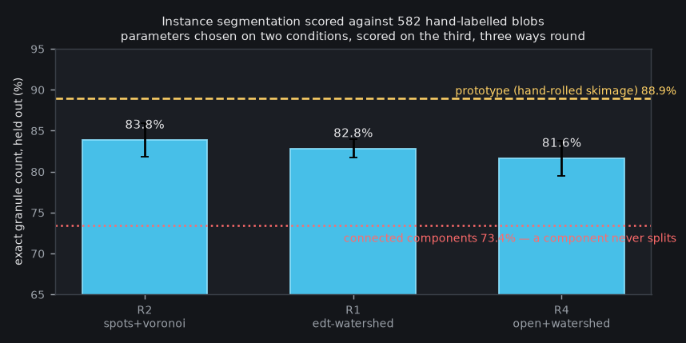
| Route | Nodes | M01 | M08 | M15 | held-out mean | under | over | lost |
|---|---|---|---|---|---|---|---|---|
| R2 spots + voronoi | 6 | 85.7% | 84.4% | 81.6% | 83.8% | 9.1% | 7.0% | 1.5% |
| R1 EDT watershed | 4 | 84.2% | 82.0% | 82.1% | 82.8% | 9.1% | 8.1% | 1.2% |
| R4 greyscale open + watershed | 5 | 83.3% | 79.0% | 82.1% | 81.6% | 11.3% | 7.0% | 2.2% |
| R2p particles + voronoi | 6 | 66.5% | 50.9% | 44.8% | 54.1% | 31.3% | 14.6% | 22.2% |
| R0 connected components | 3 | 65.5% | 73.7% | 80.7% | 73.4% | 26.6% | 0.0% | 0.0% |
| prototype — hand-rolled intensity h-maxima flooded on intensity | 88.9% | 8.4% | 2.8% | 0.4% | ||||
All three leave-one-condition-out splits independently picked the same parameters — σ = 10.0 µm, band 0.7–1.3 × r_eq, threshold 0.01. That agreement is a result in itself: the optimum is a property of the material, not of which two conditions were used to find it.
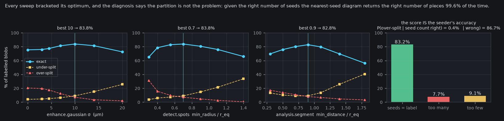
detect.spots
threshold is a flat plateau (81.3% for every value from 0 to 0.005 — saturated,
not unexplored), and R4's two flags are one-sided by construction, where 0 means "do not apply
the operation" and the honest reading is that both extra operations make it worse
— pre-smoothing before the Otsu cut costs 4.1 points, a greyscale opening costs 6.0.83.8% against the prototype's 88.9% is a 5-point deficit, and the error decomposition says exactly where it is not. Under-split is 9.1% against the prototype's 8.4% — the same. The entire gap is over-splitting: 7.0% against 2.8%.
Two very different bills could produce that, so I counted the seeds inside each labelled blob and compared against both the label and the number of pieces produced:
| Question | measured | reading |
|---|---|---|
| Seed count matches the label | 83.2% | of 582 blobs |
| Too many seeds | 7.7% | ≈ the 7.0% over-split rate |
| Too few seeds | 9.1% | = the 9.1% under-split rate |
| P(over-split | seed count was right) | 0.4% | 2 errors in 484 blobs — the partition |
| P(over-split | seed count was too high) | 86.7% | 45 blobs — the seeder |
Retraction — the COUNT is the seeder's, not the partition's. I
went in expecting the partition to be the weak link and pre-authorised two new sockets on
analysis.segment to fix it. For counting, that was wrong: the partition
contributes 2 errors out of 582, and the score simply is the seeder's accuracy —
83.2% seed agreement against 83.8% held-out score, with both error directions matching their
seed-count causes to within a point.
But read the scope of that claim carefully, because I initially over-stated it. The labels say how many granules are in a blob and never where the boundary lies, so this metric is blind to boundary placement. "The partition is essentially exact" is true of counting and, as §7 shows by measurement, false of placing. Both gaps are real and they are different gaps.
Where the gap actually lives. Both shipped seeders were exhausted:
detect.spots method=log at its swept optimum, method=dog
worse at every band, its threshold on a plateau, and detect.particles structurally
unable to do the job because its one knob sets the filter scale and the suppression radius
together. So 83.8% is the shipped catalog's ceiling for this task, and the missing
capability is a seeding algorithm — h-maxima on smoothed intensity, which suppresses a
shallow maximum by its depth rather than by scale or absolute response.
Which makes the minimal change a new method option on
detect.spots — one Mode choice on one existing node — rather than two sockets
on analysis.segment. Smaller than what I proposed, and pointed at a different
node. Nothing has been built; this is a measurement, not a change.
No. And the cost is about a third of a granule radius.
analysis.voronoi assigns each voxel to the nearest seed in µm. It never
reads the image. So its divide between two granules is the perpendicular bisector of their two
seeds — a geometric midpoint — where the physical boundary is the dim seam where the two
bodies meet. Nothing in the shipped chain compares the two.
The labels cannot detect this, which is why §5 and §6 missed it. A label says "this blob holds two granules". It says nothing about where the surface between them lies. Every score in §5 is a count metric and is structurally blind to a boundary that is in the wrong place but on the right side of every seed. So this needed a separate, label-free measurement.
The experiment. Take the pipeline's seeds and hold them identical. Partition
once with analysis.voronoi (geometric) and once by flooding the smoothed intensity
from the same markers. No shipped node can do the second — that is the point — but as a
measuring instrument it isolates the partition rule with nothing else moving.
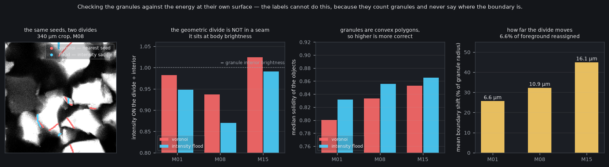
| Check (no ground truth needed) | M01 | M08 | M15 | reading |
|---|---|---|---|---|
| intensity ON the voronoi divide ÷ interior | 0.982 | 0.937 | 1.024 | at body brightness — at M15 brighter than the interior median |
| …on the intensity-flood divide | 0.948 | 0.870 | 0.991 | consistently dimmer: a real seam |
| median solidity, voronoi objects | 0.801 | 0.834 | 0.853 | granules are convex polygons, so higher is right |
| median solidity, flood objects | 0.832 | 0.856 | 0.865 | more convex at every condition |
| foreground assigned differently | 5.5% | 7.4% | 7.5% | 6.6% pooled |
| mean boundary shift | 6.6 µm | 10.9 µm | 16.1 µm | 31.9% of a granule radius, pooled |
Three independent checks, all pointing the same way, and the first one is the most damning: a divide sitting at 0.98–1.02 of interior brightness is not in a seam at all — it is in the granule body. The user's own read of these images was that a merge betrays itself through "very high energy areas that form peninsulas" and thin bright connections. That tell is about the surface, and the current pipeline uses intensity only to locate centres.
analysis.measure shape=solidity
is shipped, so a user can see 0.80 where a convex polygon should give ~0.95 and know the
boundaries are wrong, with no labels at all. That is worth writing into the preset.height socket is back on the table — for boundary accuracy, not
for counting. My retraction of it in §6 was made on a count-only metric and was premature;
this is the measurement that would have justified it, and it is a different justification from
the one I originally gave. Still nothing built.Not measured, and worth being explicit about: the plan's other surface-energy
idea — a boundary-area penalty γ̃|∂L| that forbids protrusions thinner than
w_min, so a thin jut can never be admitted — is not implemented or tested anywhere
here. It lives in analysis.relax_shapes, which this pass never exercised. The
solidity numbers above are the closest thing to evidence that such a term would have something
to do: at 0.80–0.87, both partitions are producing objects less convex than the material is.
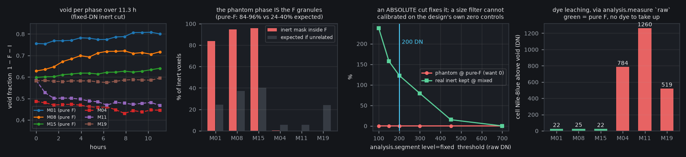
At a pure-functional control the well contains no inert material at all, so every
voxel Otsu calls "inert" in the Nile-Blue channel is an artefact. My plan asserted that
analysis.segment's min_area "is the phantom-inert fix". It
is not. A uniform µm² filter removed only 45–64% of it and stalled.
The reason is measurable. The residual phantom mask sits 83.7% / 94.7% / 95.7% inside the F mask, against random expectations of 24.4% / 37.2% / 40.2%. It is the functional granules' own autofluorescence pedestal bleeding into the Nile-Blue channel — so it is granule-shaped, therefore granule-sized, and no area threshold can reach it.
An existing node does fix it — a different parameter of the same
node. analysis.segment level=fixed takes an absolute raw-DN threshold, and
the design supplies its own calibration set: at the three pure-F controls every Nile-Blue
count is known to be artefact. At 200 DN the phantom phase is exactly 0.0000 at
all three, while 109–137% of what Otsu found survives at the three mixed conditions —
Otsu was under-detecting real inert, because bright granules pull its cut upward.
The threshold is interior to a well-behaved range: below it the mask balloons (277% at 100 DN), above it real inert dies (73% at 300, 0% at 700). Zero new nodes; the experiment's own zero control choosing a parameter.
And the trade-off that buys. A fixed cut is immune to being handed a channel with no signal, but unlike Otsu it does not self-correct for bleaching over a 15-frame series. The mixed conditions come out flat-to-falling in inert fraction, so bleaching is not visibly biting here — but on a longer series or a dimmer dye this is the failure mode to watch, and it is the price of the fix rather than a free win.
| Condition | design | F solid | I solid | void = 1−F−I | F∩I Jaccard |
|---|---|---|---|---|---|
| M01 | pure F, small | 0.218 | 0.000 | 0.782 | — |
| M08 | pure F, medium | 0.308 | 0.000 | 0.692 | — |
| M15 | pure F, large | 0.382 | 0.000 | 0.618 | — |
| M04 | 0.50 F, S+M inert | 0.061 | 0.480 | 0.459 | 0.0024 |
| M11 | 0.50 F, M+M inert | 0.080 | 0.426 | 0.494 | 0.0006 |
| M19 | 0.75 F, L+L inert | 0.242 | 0.175 | 0.583 | 0.0003 |
The subtraction is licensed, and measured rather than assumed. There is no shipped
boolean op to intersect two masks, so the F∩I overlap is computed in the reporting layer from
two node outputs — and at every mixed condition it is ≤ 0.24%, which bounds the error in
1 − F − I.
Void now behaves like packing. It falls monotonically as inert is added (pure-F 0.782 / 0.692 / 0.618 → mixed 0.459 / 0.494 / 0.583), and within the pure-F series it falls with granule size. The prototype's uniform ~0.60 across all six conditions was hiding that trend behind the phantom solid it was counting as material — this is a case where the node route is not merely comparable but more coherent.
| Condition | cells | d_eq µm | GFP | F channel | NB above void |
|---|---|---|---|---|---|
| M01 pure F | 302 | 13.1 | 2559 | 1277 | +22 |
| M08 pure F | 101 | 12.9 | 2709 | 1654 | +25 |
| M15 pure F | 72 | 11.9 | 2789 | 1582 | +22 |
| M04 | 67 | 12.7 | 2331 | 1034 | +784 |
| M11 | 18 | 12.4 | 2266 | 1134 | +1260 |
| M19 | 30 | 10.2 | 2543 | 1628 | +519 |
A 24–57× split on nothing but dye availability, with GFP roughly equal across both
groups as the detection control and cell diameter consistent at 10–13 µm. The cells are
GFP-labelled; where Nile-Blue granules exist the dye leaches into them. The three pure-F
controls are the experiment's own zero — no inert material, nothing to take up — and this is
the whole measurement, delivered by analysis.measure's raw socket
with no unmixing anywhere.
track.link target=label links by maximum IoU, and it runs. But the number that
matters is how long an identity survives: only 2.4–30.7% of granule tracks span 90% of the
series. Granule identity does not persist, so per-granule motion is not measurable
from this linking — the same blocker the prototype hit, now reproduced through the node route
rather than blamed on a script.
A metric I had to disqualify. I first reported "match/frame = 100.0%" at every condition. It is vacuous: every object appears in exactly one membership row, so rows ÷ objects is 1.0 whatever the linking did. It is left in the script output labelled as vacuous rather than deleted, because a metric that reads 100% at every condition is exactly the kind of thing that gets quoted.
Cell speed comes out at 0.144–0.318 µm/min against the prototype's 0.39 µm/min drift-corrected — same order, both inside the textbook mammalian crawling range. The node route reads lower, not higher, so my prediction that a missing drift model would inflate it was wrong. The difference is unattributed and stays that way until measured.
| Capability | Verdict | Evidence |
|---|---|---|
| Otsu foreground | identical | bit-for-bit equal arrays at all three conditions |
| Debris rejection | better | µm²-calibrated, one node; 2337 → 303 components |
| Splitting touching granules | 10 points up, 5 short | 73.4% → 83.8% vs 88.9% |
| EDT watershed | better | 82.8% vs the prototype's EDT h-maxima at 81.7% |
| Nearest-seed partition — counting | essentially exact | 99.6% correct given correct seeds |
| Nearest-seed partition — boundary placement | worse | cuts through bright bodies; 0.98-1.02 of interior brightness on the divide |
| Phantom-phase suppression | better | exactly 0.0000, and it gains real inert |
| Void fraction | more coherent | monotone in inert content; prototype's was flat |
| Cross-channel intensity | reproduced | 24–57× leaching split, no unmixing |
| IoU linking | was always there | my centroid linker was the defect |
| Per-granule motion | not supported | 2.4–30.7% track span |
| Gap | Cost here | Smallest honest fix |
|---|---|---|
| No h-maxima seeder | 5.1 points of accuracy — the only gap that cost real precision | a method option on detect.spots |
| No mask boolean algebra | none — the overlap is two numbers, and it is ≤0.24% | nothing; reporting layer |
| No per-object column filter | none here — both uses were area windows the producers already have | nothing yet |
| No object classification by feature | none — F and I are channels | nothing; proposal withdrawn |
| No external flood landscape — counting | none — measured at 0.4% | nothing needed for count accuracy |
| No external flood landscape — boundary placement | 31.9% of a granule radius; the divide sits at body brightness, not in a seam | a height socket on analysis.segment's watershed branch — justified by §7, not by §5 |
track.link writes no track_id back | it does not compose with object_metrics | bridged with a third shipped node, transfer_structure track→point |
| Cross-channel object→object binding | cell parent identity unavailable; cell/phase preference is not | a channel-scope Mode on transfer_structure — not needed for any result here |
measure has no output name | two channels need two pulls | nothing; a documented shape |
dt_s 4× wrong on strided timestamps | would have made every velocity 4× too slow | compare stamp count to the T axis and refuse, per the module's own "absent is the honest signal" rule |
| Empty result emits no structure table | a correct "found nothing" looks like a missing layer | nothing; worth documenting |
min_area is the phantom-inert fix." It removes 45–64% and stalls,
because the phantom is granule-sized by construction. The fix was level=fixed.bound=per_region's arena constraint is what does the work."
bound=mask ties it. The arenas are not the mechanism.PYTHONUTF8=1 python scripts/_bed_nodegraph.py parity # foreground vs the prototype PYTHONUTF8=1 python scripts/_bed_nodegraph.py bench # the five routes, per condition PYTHONUTF8=1 python scripts/_bed_nodegraph.py sweep # bracketed sweeps + leave-one-out PYTHONUTF8=1 python scripts/_bed_nodegraph.py diagnose # seeder vs partition PYTHONUTF8=1 python scripts/_bed_nodegraph.py plateau # resolve the boundary flags PYTHONUTF8=1 python scripts/_bed_nodegraph.py phases # void per phase over time PYTHONUTF8=1 python scripts/_bed_nodegraph.py phantom # the containment test + the fix PYTHONUTF8=1 python scripts/_bed_nodegraph.py cells # leaching, cross-channel PYTHONUTF8=1 python scripts/_bed_nodegraph.py track # IoU linking + cell speed PYTHONUTF8=1 python scripts/_bed_nodegraph.py surface # boundary vs the intensity saddle PYTHONUTF8=1 python scripts/_bed_nodegraph.py graphs # write CodeLog/graphs/*.nd2graph.json PYTHONUTF8=1 QT_QPA_PLATFORM=offscreen python scripts/_bed_nodegraph_shots.py # the GUI shots PYTHONUTF8=1 python scripts/_bed_nodegraph_report.py # the figures
Qt lives only in _bed_nodegraph_shots.py; the engine work never
imports PySide6. The two meet through the *.nd2graph.json files, which is what
keeps the screenshots and the numbers describing the same graph. Figures and every number are
script-generated into CodeLog/img/nodes/ and
results/nodegraph/*.json; the prose around them is written by hand.
Validation set: 582 of 589 hand-labelled blobs across M01 / M08 / M15. Results: 6 conditions × 15 timepoints at z=1. The 18.5 GB source was read lazily throughout and never transcoded.